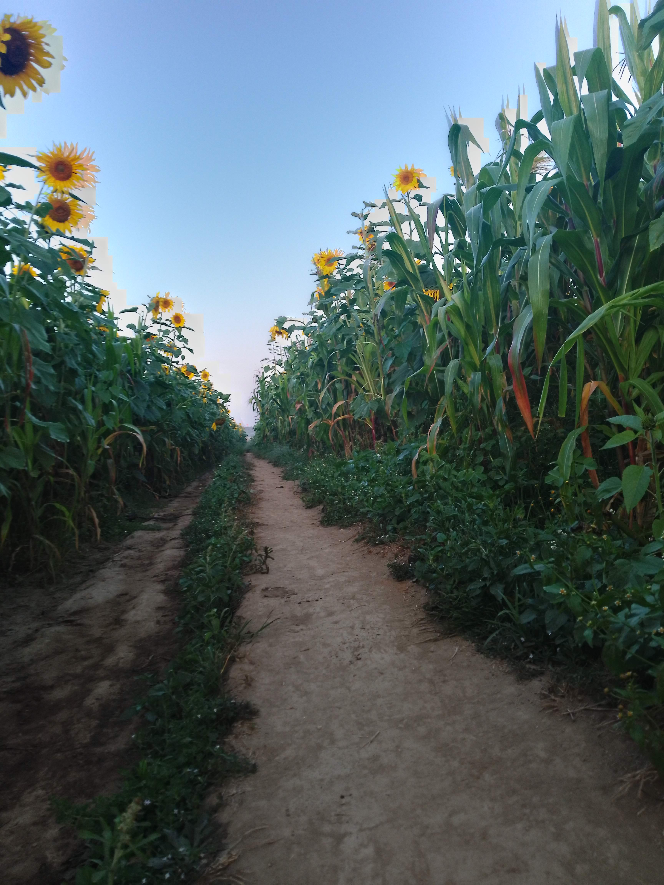
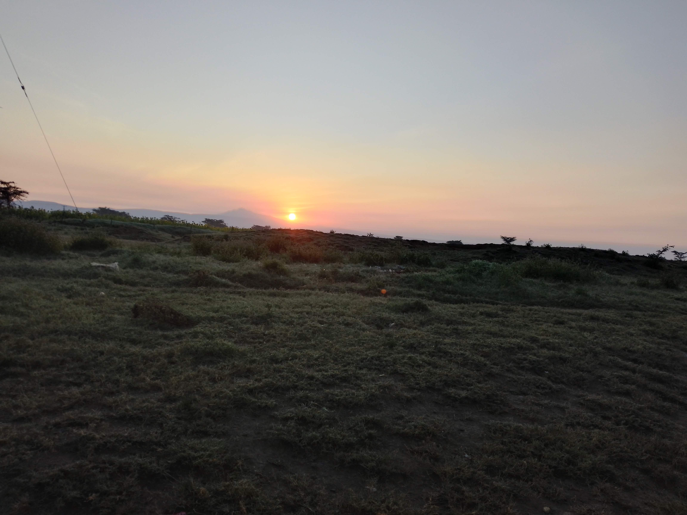
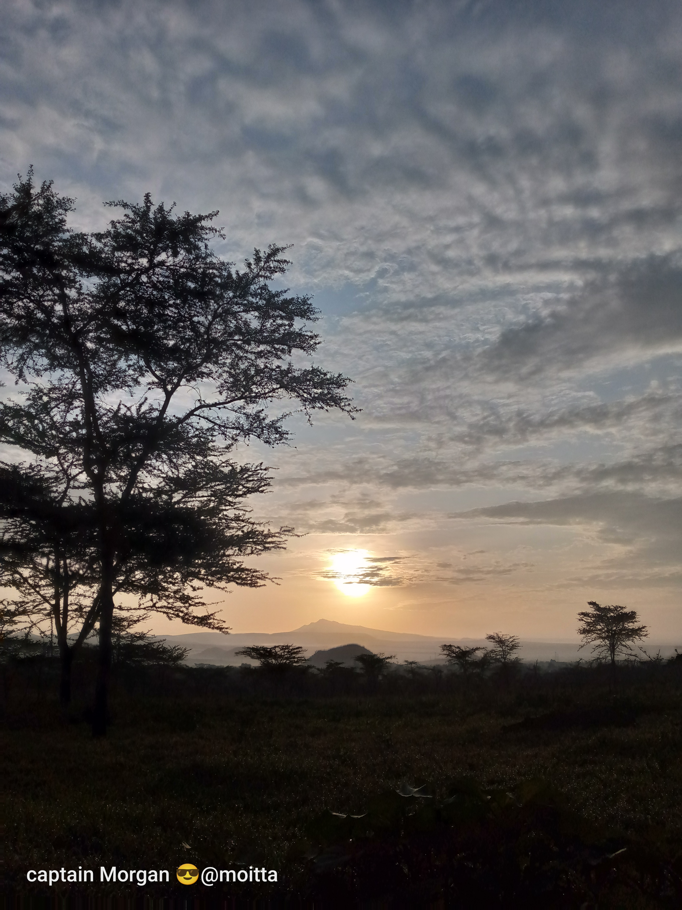
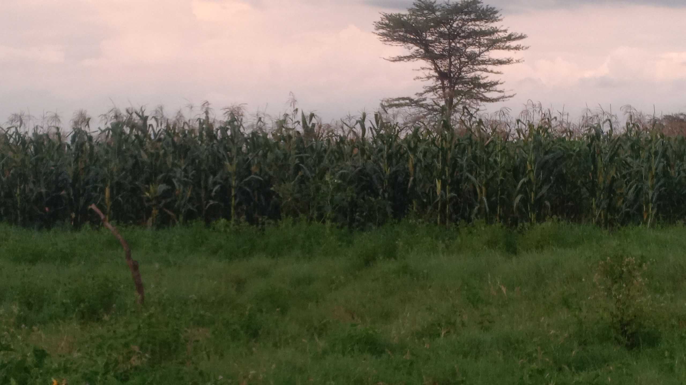

farmers weeding maize plans ,this is the main crop grown in the region since its arid
farming is done here once per year due to insuficient rain
sometime it is taking risk since rain may fail.

Maize farms play an important role in providing food, supporting farmers’ livelihoods, and contributing to the local economy. 🌽

An Acacia tree is a common tree found in Savanna regions.
It is well known for its flat-topped shape, which allows the tree to spread its branches widely and capture sunlight.
Acacia trees are adapted to hot and dry climates, so they can survive with little rainfall.
The tree usually has small leaves and sharp thorns that protect it from animals that might try to eat it.
Some species also produce yellow or white flowers and seed pods.
Acacia trees are very important in the savannah ecosystem because:
They provide shade and shelter for animals and people.
Animals such as Giraffe and Elephant feed on their leaves.
Their roots help improve soil fertility by adding nutrients to the soil.

The Sunflower is a tall flowering plant known for its large, bright yellow petals and dark center.
It is one of the most easily recognized plants because its flower looks similar to the sun. Sunflowers usually grow in warm and sunny environments and can reach heights of about 1.5 to 3 meters.
Sunflowers are important for both people and the environment. Their seeds are used to make sunflower oil, which is commonly used for cooking.
The seeds can also be eaten as snacks or used as food for birds and animals.
Another interesting feature of sunflowers is Heliotropism. Young sunflower plants turn their heads during the day to face the sun, which helps them grow better.
Sunflowers also help attract insects like Honey bee, which assist in pollination. Because of their beauty and usefulness, sunflowers are often grown in farms, gardens, and open fields. 🌻

Tall grass in the Savanna grows very quickly when the rains fall. After the first rains, the grass begins to sprout and within a short time the land becomes green.
This fast growth happens because the grass is well adapted to the warm climate and seasonal rainfall of the savannah.
The quick-growing grass provides fresh food for animals such as the Zebra, Wildebeest, and Gazelle.
These animals depend on the new grass for grazing during the rainy season.
Because it grows fast, tall grass helps the savannah recover quickly after dry seasons or fires, making the land green and full of life again. 🌾

{kind=link}
maize farm

view of the plans in the eveving

cattle grazing in tall savannah grass
{kind=link}

a view of an acacia tree in the evening
{kind=link}

a large scale maize farm